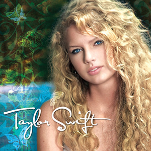
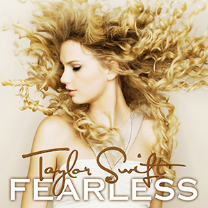
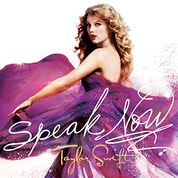
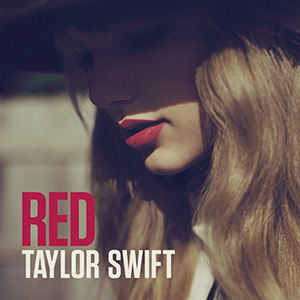

Taylor Swift performing in Tacoma, Washington. Photo by Ronald Woan. License: CC BY-NC 2.0. Source: Flickr.
Taylor Alison Swift is one of America's best singer-songwriters. She earned her place in that category as a best-selling country artist from 2006 to 2012 and did it again as she rebranded herself as a pop artist in 2014. It is a rare thing to see an artist flip to another genre of music, and it is even rarer to see one succeed in their original and new style. Click the albums below to hear how her music slowly turned from country to pop.
   Song: Our Song
Song: You Belong With Me
Song: Mine
Song: 22